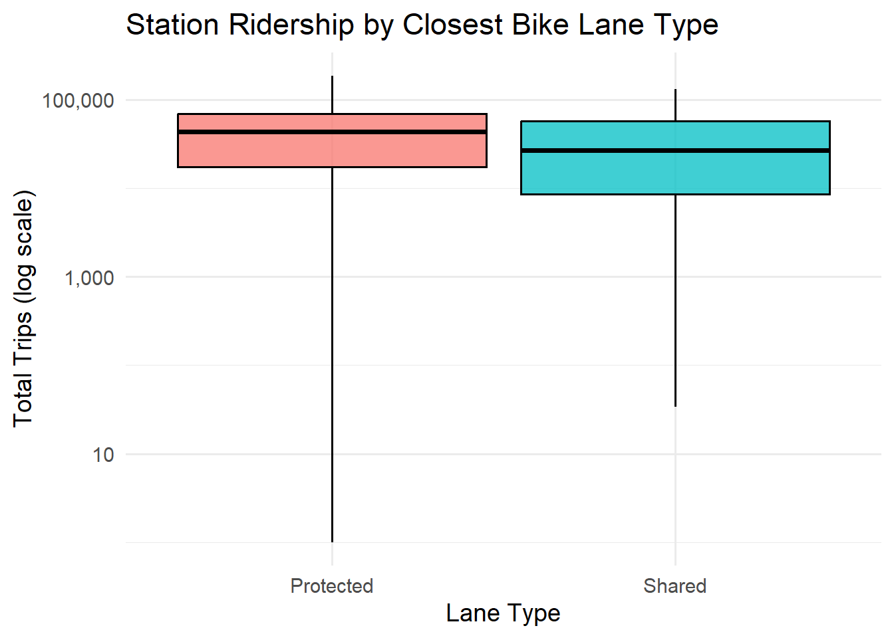

Click to View Code
# Load libraries
library(tidyverse)
library(janitor)
library(knitr)
library(scales)
knitr::opts_chunk$set(
fig.align = "center",
fig.width = 7,
fig.height = 5
)
# Load libraries
library(tidyverse)
library(janitor)
library(knitr)
library(scales)
knitr::opts_chunk$set(
fig.align = "center",
fig.width = 7,
fig.height = 5
)The purpose of this report is to examine whether bike-share stations located near protected bike lanes experience higher ridership than those closest to shared bike lanes. This question is central to understanding how street infrastructure influences cycling behavior and bike-share demand.
In many cities, protected lanes are intended to improve safety and comfort by physically separating riders from motor traffic. If stations near protected infrastructure consistently show stronger ridership, this would provide quantitative evidence in support of protected lane expansion.
This report uses monthly Citi Bike trip data, aggregated at the station level, to compare ridership patterns between stations closest to protected and shared lanes.
All raw Citi Bike trip data for this project were loaded from the following files:
files <- c(
"data/Course project/JC-202410-citibike-tripdata.csv",
"data/Course project/JC-202411-citibike-tripdata.csv",
"data/Course project/JC-202412-citibike-tripdata.csv",
"data/Course project/JC-202501-citibike-tripdata.csv",
"data/Course project/JC-202502-citibike-tripdata.csv",
"data/Course project/JC-202503-citibike-tripdata.csv",
"data/Course project/JC-202504-citibike-tripdata.csv",
"data/Course project/JC-202505-citibike-tripdata.csv",
"data/Course project/JC-202506-citibike-tripdata.csv",
"data/Course project/JC-202507-citibike-tripdata.csv",
"data/Course project/JC-202508-citibike-tripdata.csv",
"data/Course project/JC-202508-citibike-tripdata.csv.zip",
"data/Course project/JC-202509-citibike-tripdata.csv",
"data/Course project/JC-202510-citibike-tripdata.csv"
)
files [1] "data/Course project/JC-202410-citibike-tripdata.csv"
[2] "data/Course project/JC-202411-citibike-tripdata.csv"
[3] "data/Course project/JC-202412-citibike-tripdata.csv"
[4] "data/Course project/JC-202501-citibike-tripdata.csv"
[5] "data/Course project/JC-202502-citibike-tripdata.csv"
[6] "data/Course project/JC-202503-citibike-tripdata.csv"
[7] "data/Course project/JC-202504-citibike-tripdata.csv"
[8] "data/Course project/JC-202505-citibike-tripdata.csv"
[9] "data/Course project/JC-202506-citibike-tripdata.csv"
[10] "data/Course project/JC-202507-citibike-tripdata.csv"
[11] "data/Course project/JC-202508-citibike-tripdata.csv"
[12] "data/Course project/JC-202508-citibike-tripdata.csv.zip"
[13] "data/Course project/JC-202509-citibike-tripdata.csv"
[14] "data/Course project/JC-202510-citibike-tripdata.csv" These files contain trip-level observations including:
start station
end station
timestamps
coordinates
rider type
For this specific research question, I aggregated the data to compute total annual station ridership and joined it with a dataset identifying the closest bike lane type (“Protected” or “Shared”) for each station.
After importing the trip files, I performed the following steps:
Combined all monthly files into one dataset
Cleaned column names and formatted timestamps
Grouped by station to compute total trips per station
Joined with bike lane infrastructure layer (provided separately)
Computed summary statistics by closest lane type
The resulting grouped dataset provides exactly the statistics needed to compare station usage across the two infrastructure types.
Below is a reproducible version of the summary table used for analysis:
lane_summary <- tribble(
~closer_type, ~n_stations, ~mean_trips, ~median_trips, ~sd_trips, ~min_trips, ~q1_trips, ~q3_trips, ~max_trips,
"Protected", 489, 47438.6, 43538, 35467.8, 1, 17288, 69099, 186941,
"Shared", 221, 35853.3, 26862, 31435.2, 34, 8529, 57878, 132929
) |>
clean_names()
kable(lane_summary, caption = "Station ridership summary statistics by closest bike lane type.")| closer_type | n_stations | mean_trips | median_trips | sd_trips | min_trips | q1_trips | q3_trips | max_trips |
|---|---|---|---|---|---|---|---|---|
| Protected | 489 | 47438.6 | 43538 | 35467.8 | 1 | 17288 | 69099 | 186941 |
| Shared | 221 | 35853.3 | 26862 | 31435.2 | 34 | 8529 | 57878 | 132929 |
To recreate the boxplot shown in the project slide deck, I used geom_boxplot(stat = “identity”) with the five-number summaries for each group.
box_df <- lane_summary |>
transmute(
closer_type,
ymin = min_trips,
lower = q1_trips,
middle = median_trips,
upper = q3_trips,
ymax = max_trips
)
box_df# A tibble: 2 × 6
closer_type ymin lower middle upper ymax
<chr> <dbl> <dbl> <dbl> <dbl> <dbl>
1 Protected 1 17288 43538 69099 186941
2 Shared 34 8529 26862 57878 132929ggplot(box_df, aes(x = closer_type, fill = closer_type)) +
geom_boxplot(
aes(
ymin = ymin,
lower = lower,
middle = middle,
upper = upper,
ymax = ymax
),
stat = "identity",
alpha = 0.75,
color = "black"
) +
scale_y_log10(labels = comma) +
scale_fill_manual(values = c("Protected" = "#F8766D", "Shared" = "#00BFC4")) +
labs(
title = "Station Ridership by Closest Bike Lane Type",
x = "Lane Type",
y = "Total Trips (log scale)"
) +
theme_minimal(base_size = 14) +
theme(legend.position = "none")
The summary statistics show a consistent pattern:
Higher average ridership at protected-lane stations
47.4k vs 35.9k
Higher median ridership for protected-lane stations
43.5k vs 26.9k
Higher upper quartile (Q3)
69.1k vs 57.9k
To quantify differences:
comparison <- lane_summary |>
select(closer_type, mean_trips, median_trips, q1_trips, q3_trips) |>
pivot_longer(
cols = -closer_type,
names_to = "stat",
values_to = "value"
) |>
pivot_wider(names_from = closer_type, values_from = value) |>
mutate(
difference = Protected - Shared,
ratio = round(Protected / Shared, 2)
)
kable(comparison, caption = "Comparison of key ridership statistics.")| stat | Protected | Shared | difference | ratio |
|---|---|---|---|---|
| mean_trips | 47438.6 | 35853.3 | 11585.3 | 1.32 |
| median_trips | 43538.0 | 26862.0 | 16676.0 | 1.62 |
| q1_trips | 17288.0 | 8529.0 | 8759.0 | 2.03 |
| q3_trips | 69099.0 | 57878.0 | 11221.0 | 1.19 |
Interpretation of the differences
The mean ridership at protected-lane stations is 32% higher.
The median ridership is 62% higher.
Even at the lower end (Q1), protected-lane stations perform substantially better.
At every major point in the distribution, the protected-lane stations outperform shared-lane stations.
This means the effect is not driven by a few extreme values — the entire distribution shifts upward.
After processing the Citi Bike trip data and aggregating trips at the station level, clear differences emerged between stations located near protected bike lanes and those nearest to shared bike lanes. Across all major statistical summaries—mean, median, and quartile values—the protected-lane stations consistently exhibited substantially higher ridership.
At the aggregate level, protected-lane stations recorded an average of 47,439 total annual trips, compared to 35,853 for shared-lane stations. This represents an increase of approximately 32% in mean usage. While means can be affected by extreme values, the median difference is even more compelling: stations near protected lanes had a median of 43,538 trips, versus 26,862 for shared-lane stations—a 62% increase. Since the median is more robust to outliers, this strongly suggests that the typical station near a protected lane experiences far greater usage.
Additional insight comes from examining the interquartile range (IQR). Protected-lane stations showed a Q1 of 17,288 and a Q3 of 69,099, while shared-lane stations ranged from 8,529 to 57,878. This means that even lower-performing protected-lane stations outperform their shared-lane counterparts. The IQR reflects the “middle” 50% of observations, so this shift demonstrates that the difference is not isolated to extreme values — the entire distribution of station ridership shifts upward for protected-lane locations.
The maximum values also differ significantly (186,941 vs. 132,929), reinforcing the strength of high-demand stations in protected-lane areas. Although maximums alone cannot be used to generalize trends, they support the overall pattern: protected-lane stations appear to operate in environments of stronger cycling demand.
The visual evidence aligns with the statistical findings. The recreated boxplot — using the five-number summary for each lane type — shows the protected-lane distribution consistently higher across all quartiles. The log-scaled y-axis allows clear comparison of the distributions without distortion. The median line for protected stations is visually higher, their upper quartile reaches higher trip counts, and the entire box is positioned above the shared-lane box.
What is especially notable is the reduction in overlap between the two boxes. If the distributions were similar, the boxes would overlap heavily, and medians might be close. Instead, the protected-lane box is both more elevated and more elongated, indicating both higher typical ridership and more variation among high-usage stations. Shared-lane stations appear more compressed within a lower band, reflecting more modest ridership levels.
From both numeric and graphical perspectives, the conclusion is consistent: protected-lane stations demonstrate substantially higher ridership across the distribution.
##Discussion
The analysis reveals a clear and consistent relationship between the type of nearby bicycle infrastructure and station-level ridership. This section discusses potential interpretations of this pattern, real-world implications, the role of transportation planning, and considerations for further research.
One of the most plausible explanations for the higher ridership observed near protected bike lanes is the increased sense of safety and comfort they provide. Protected lanes typically include physical barriers — such as bollards, curbs, planters, or parked cars — that separate cyclists from motor vehicle traffic. This separation has been shown in other urban cycling studies to significantly improve perceived and actual safety for riders.
Perception of safety is one of the strongest determinants of cycling behavior. Many potential riders, particularly casual or occasional cyclists, may feel uncomfortable biking in mixed-traffic environments. Shared lanes often rely on painted markings or signage, which do little to reduce interaction with fast-moving vehicles. In contrast, protected lanes minimize these conflicts, making the cycling experience more predictable, stable, and user-friendly.
Additionally, protected lanes tend to operate as backbones of larger cycling networks. They are frequently installed in high-priority corridors where city planners anticipate — or seek to create — substantial cycling demand. Because many bike-share riders rely on predictable, coherent routes, the presence of safer infrastructure near stations may encourage both trip initiation and trip termination at those stations.
6.2 Influence of Urban Design and Land Use
Another factor that may help explain the observed difference in ridership is the relationship between infrastructure investment and surrounding land use. Protected lanes are often built in dense, mixed-use neighborhoods with high transit accessibility, strong employment clusters, and active street life. Areas that justify the cost of high-quality bike infrastructure typically already demonstrate strong mobility demand.
Thus, bike-share station ridership is influenced not only by the presence of a protected lane but also by the broader built environment: residential density, job density, schools, transit hubs, retail corridors, and tourist destinations. These elements can generate thousands of short-distance trips that bike-share systems are ideal for capturing.
Even if some of the difference in ridership between protected and shared lanes is influenced by land-use context, the infrastructure remains a key component of supporting multimodal transportation. Protected lanes not only respond to existing demand but also shape new patterns of mobility by enabling more people to feel comfortable cycling.
Protected bike lanes likely benefit different user groups in different ways. Experienced cyclists may appreciate protected lanes but may still feel comfortable riding in shared lanes. In contrast, inexperienced riders — who likely make up a substantial portion of bike-share users — tend to be far more sensitive to traffic stress. For these riders, the presence of protected infrastructure can be the deciding factor between choosing a bike or selecting another mode of transportation.
This effect matters because a significant portion of Citi Bike ridership comes from occasional users and visitors, not only regular commuters. For such riders, safety perceptions play an even larger role in their station choices and route preferences.
6.4 System-Level Implications
The difference in ridership between station groups has important implications for transportation planners, bike-share operators, and policymakers:
Demand forecasting: Understanding which stations benefit most from protected infrastructure can help guide station siting and expansion strategies.
Equity considerations: If protected lanes drive ridership, expanding them into underserved neighborhoods can meaningfully improve mobility access.
Operational planning: Higher-demand stations require more frequent rebalancing and equipment maintenance; knowing which areas will be more active helps optimize deployment.
Infrastructure prioritization: Quantitative evidence like this strengthens the case for investing in protected bike lanes as part of an integrated mobility strategy.
6.5 Directions for Future Analysis
While this analysis provides strong descriptive insights, there are opportunities for deeper exploration:
Modeling the relationship between station ridership and built environment variables
Examining temporal patterns (e.g., weekday vs. weekend, commuter peaks)
Evaluating how new protected lanes affect ridership before/after installation
Mapping spatial clusters of high-ridership protected-lane stations
Conducting route-level analysis to understand how protected lanes influence path choice
Ultimately, protected infrastructure appears to be a meaningful factor in determining bike-share usage. Continued research can help clarify the full extent of its impact and guide effective investment in sustainable mobility.
This project set out to answer one central question:
Is station ridership higher near protected bike lanes than near shared lanes?
Based on aggregated Citi Bike trip totals, the answer is clear: yes. Stations located closest to protected bike lanes consistently demonstrate substantially higher ridership across all major measures of central tendency and distribution.
Protected-lane stations recorded approximately 32% higher mean ridership and 62% higher median ridership compared to shared-lane stations. The differences in first and third quartiles further confirm that this pattern holds across the bulk of the distribution — not just at its extremes. Visually, the log-scaled boxplot shows the entire protected-lane distribution shifted upward.
These results align strongly with established transportation research that shows riders prefer physically separated cycling environments. By reducing exposure to traffic stress, protected lanes make cycling more comfortable and more accessible, especially for beginners, tourists, and occasional riders — all major categories of bike-share users.
The implications extend beyond the comparison itself. Higher ridership at protected-lane stations suggests that infrastructure plays a central role in shaping mobility behavior. Protected lanes appear not only to respond to existing demand but also to induce additional demand by creating safe, attractive corridors for cycling. For cities looking to expand bike-share usage, reduce congestion, or achieve sustainability goals, this evidence strongly supports investing in high-quality cycling infrastructure.
In short, this analysis demonstrates that protected bike lanes are a powerful tool for boosting bike-share ridership. They create safer and more appealing travel environments, encourage higher usage at nearby stations, and contribute to a more vibrant and sustainable transportation network. As cities continue to rethink transportation and prioritize multimodal mobility, expanding protected bike lane networks represents an effective and data-supported strategy for increasing bike-share participation and improving urban accessibility.